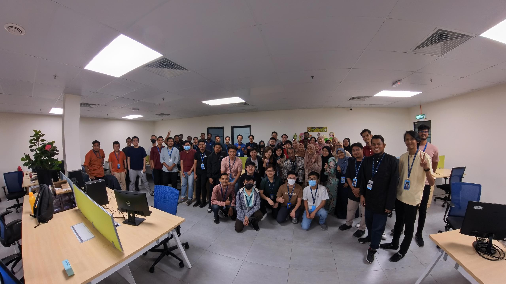
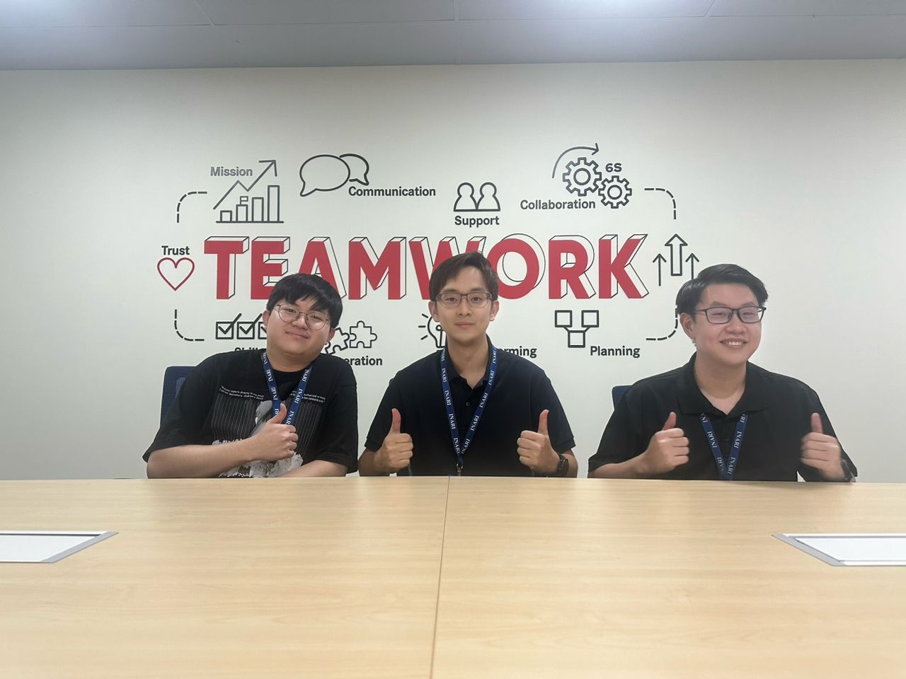

Personal Experience
Diploma Intern
Inari Technology Sdn Bhd · Internship
- Spearheaded the development of an Industrial GUI Automation Framework for the MIT50 system using Python, PyAutoGUI, and OpenCV.
- Automated complex UI interactions and lot-starting processes, significantly reducing manual error and operational time.
- Integrated Node-RED APIs for real-time machine info fetching and process state monitoring.
- Developed custom Python scripts for reflow oven monitoring and graph analysis to track manufacturing states.
- Collaborated with a professional engineering team to solve real-world production challenges and master process automation workflows.


Selected Works
Detailed analysis and implementation of my core projects across UTeM and Polytechnic.
Synthetic Defect Generation Framework
Researching a Semi-Supervised Generative AI framework for industrial inspection. Focused on creating high-fidelity synthetic defect data to train classification models.
Emotion-Based Music Suggester
Designed a Smart Music Recommendation System that analyzes user facial expressions to detect mood and suggests tailored Spotify playlists.
iHostel Management System
Engineered a robust Hostel Management System using C++ and MySQL, featuring multi-tier authentication and room allocation algorithms.
Object Detection & E-Mapping System
Created a custom YOLO-based training model to predict object status (Good, Missing, or Defect). Implemented automated image processing and E-Map visualization with XML data export.
MIT50 GUI Automation Framework
Developed an Industrial Automation tool using Python and OpenCV to automate MIT50 software. Integrated Node-RED APIs for machine data fetching and real-time process monitoring.
PolyTime: Digital Timetable
Developed PolyTime, a cross-platform (Web & Mobile) timetable system for Polytechnic students featuring automated schedule tracking.